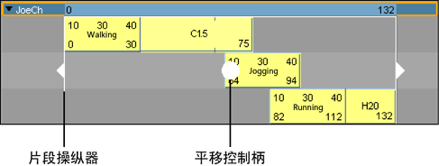

移动单个片段
- 拖动片段以在轨迹视图区域移动片段。
移动片段时，将显示“移动”鼠标指针
 。
。
可以将单个片段向上或向下拖动，或者从一侧拖动到另一侧。
向上或向下拖动片段时，鼠标指针处于轨迹之间，系统将显示黑线，表示轨迹之间将创建新轨迹以容纳拖动中的片段。有关将轨迹添加到角色、组或子角色的信息，请参见选择、添加和移除轨迹。
也可以一次移动多个片段。请看以下步骤：
注：
在“Trax 编辑器”(Trax Editor)中移动或缩放片段时，片段的边将捕捉到相邻片段的边。如果处理的片段以非整数值开始或结束，或者正在查看多个帧，需要精确度，这将非常有用。
按时间移动多个片段
- 可以选择一个或多个角色中的多个片段（按 Shift 键并单击），然后使用片段操纵器的平移控制柄沿 Trax 时间轴一次移动（从一边到另一边）所有这些片段。
